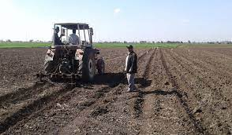
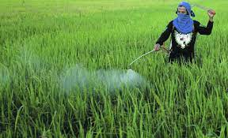

القمح


مقدمة
يعتبر القمح أهم محاصيل الحبوب الغذائية التي يعتمد عليها الشعب المصري في غذائه، و تستخدم حبوبه لإنتاج الخبز و المكرونة، كما يستخدم مربو الحيوانات تبن القمح كغذاء أساسي للحيوان.
و تولى الدولة أهمية خاصة لمحصول القمح للعمل على زيادة الإنتاجية سواء بالزيادة الراسية أو الزيادة الأفقية و ذلك بتشجيع المزارعين على زراعته لمواجهة الزيادة المطردة في عدد السكان و زيادة الطلب على القمح و منتجاته و الذي يؤدى إلي زيادة الاستيراد و زيادة الأعباء على ميزانية الدولة، و على الرغم من زيادة إنتاجية الفدان من حبوب القمح و التي بلغت (17.80 إردبا) للفدان عام 2001 كمتوسط إنتاج على مستوى الجمهورية، و بلغ متوسط الإنتاج في الأراضي القديمة داخل الوادي 18.40 إردبا/فدان، إلا انه مازالت هناك فجوة كبيرة بين الإنتاج و الاستهلاك، حيث تقوم الدولة باستيراد حوالي 4 - 5 مليون طن سنويا.
و يمكن تقليل هذه الفجوة بزيادة الإنتاج عن طريق التوسع في زراعة الأصناف الجديدة عالية المحصول و تطبيق التوصيات الفنية الخاصة بتلك الأصناف و التي تزيد من كفاءتها الإنتاجية، و كذلك عن طريق حماية المحصول من الآفات الضارة و مكافحتها في حينه لضمان سلامة المحصول.
و فيما يلي أهم التوصيات الفنية التي يوصى بها البرنامج القومي لبحوث القمح و التي تعمل على زيادة محصول أصناف القمح المنزرعة.
الأصناف الموصى بها و مناطق زراعتها :
يجب الاهتمام باختيار الأصناف الملائمة و التي تناسب زراعتها الظروف البيئية السائدة في مناطق زراعة القمح المختلفة في الجمهورية، و التي تقوم وزارة الزراعة بتوزيعها على المزارعين و هذه الأصناف المستنبطة بمعرفة برنامج بحوث القمح عالية المحصول مقاومة للأمراض و الرقاد و الانفراط و ذات صفات تكنولوجية ممتازة على أن تكون التقاوي معاملة بالمطهرات الفطرية لمقاومة مرض التفحم السائب.
ويجب أن يكون معلوما لدى المزارعين أن استخدام الأصناف النقية من مصادرها الرسمية يؤدى إلي :
الحصول على الصنف المناسب بنقاوة وراثية عالية تضمن زيادة المحصول و مناسبة الصنف للظروف السائدة.
الحصول على تقاوي متجانسة الحجم و الحيوية مما يضمن ارتفاع نسبة الإنبات و زيادة كثافة النباتات.
الحصول على التقاوي من مصادرها الرسمية يضمن معاملتها بالمطهرات الفطرية التي تمنع الإصابة بالأمراض الفطرية و التي من أهمها مرض التفحم السائب.
و يجب الأخذ في الاعتبار عدم زراعة الأصناف القديمة نظرا لتدهور صفاتها و انخفاض محصولها بدرجة كبيرة و شدة إصابتها بأمراض الأصداء الثلاثة و مرض التفحم السائب كذلك تعرضها للرقاد و الفرط و عدم استجابتها للأسمدة.
أولا : قمح الخبز
و يستخدم قمح الخبز في صناعة الخبز و الحلويات بكافة انواعها، و فيما يلي وصف موجز لأهم الأصناف المنزرعة :
سخا 8
صنف يتحمل ملوحة التربة، و ملوحة مياه الري وعلى ذلك يمكن زراعته في المناطق المتأثرة بالملوحة في محافظات مصر الوسطى و محافظة الفيوم و مناطق جنوب سيناء المروية بمياه الآبار، و لا ينصح بزراعته في شمال الدلتا نظرا لقابليته للإصابة بالأصداء وهذا الصنف سيتم إلغاءه إعتباراً من الموسم القادم ليحل محله الصنف الجديد سخا 93.
سخا 61
و يزرع في شمال الدلتا على أن تكون التقاوي معاملة بالمطهرات الفطرية ضد مرض التفحم السائب و هو اكثر الأصناف مقاومة لمرض الصدأ الأصفر.
سخا 69
و تجود زراعته في جميع مناطق الجمهورية و لكن نظرا لشدة قابليته للإصابة بالصدأ الأصفر - لا ينصح بزراعته في منطقة شمال الدلتا وسوف يتم إلغاءه اعتباراً من العام القادم ليحل محله الأصناف جيزة 168 , سخا 93 , وجميزة 7 , وجميزة 9 .
سدس 1
و تجود زراعته في معظم مناطق الجمهورية لأنه اكثر تحملا لارتفاع حرارة الجو في نهاية الموسم و اكثر تحملا لملوحة التربة ، و لهذا ينصح بزراعته في مناطق مصر الوسطى و مصر العليا و الوادي الجديد، و في الأراضي التي تعانى من الملوحة في الوجه القبلي .
جيزة 164
تجود زراعتهما في مناطق مصر الوسطى و العليا و الوادي الجديد لتحملهما لدرجات الحرارة المرتفعة ونظراً لقابليته للإصابة بالأمراض , سيتم إلغاؤه إعتباراً من العام القادم ليحل محله الصنف سدس1 والصنف جيزة 168 .
جيزة 168
من الأصناف الجديدة عالية الإنتاج المقاومة لأمراض الصدأ خاصة الصدأ الأصفر و تجود زراعته في الوجه البحري بصفة عامة، و منطقة النوبارية و البستان و في مصر الوسطى و في الوادي الجديد.
جميزة 7، جميزة 9
من الأصناف الجديدة عالية الإنتاجية، و يتميز الصنف جميزة 9 بمقاومته لأصداء القمح الثلاثة و تجود زراعتها في مناطق شمال و وسط و جنوب الدلتا و منطقة البستان و النوبارية و يجب عدم التأخير في حصاد الصنف جميزة 7 حتى لا يتعرض إلي الفرط.
سخا 93
تجود زراعته في مناطق شمال الدلتا و في الأراضي الملحية في أي مكان بالجمهورية، و يتميز بمقاومته العالية للصدأ الأصفر وبحبوبه الناصعة البياض .
ثانيا : قمح الديورم (القمح الدكر)
و يستخدم لإنتاج السيمولينا التي تستخدم في صناعة المكرونة، و تتركز زراعة أصناف قمح الديورم في مصر الوسطى و العليا لتوفر الظروف البيئية المناسبة لإنتاج قمح الديورم ذو المواصفات الجيدة لصناعة المكرونة، أما أهم الأصناف المنزرعة و مناطق زراعتها فهي كالتالي :
سوهاج 3
يزرع في محافظات المنيا، و أسيوط و سوهاج، و هو من الأصناف العالية الإنتاج و الجودة.
بنى سويف 1 و بنى سويف 3
و تجود زراعتهما في مناطق مصر الوسطى و العليا وخاصة فى محافظتى المنيا وبنى سويف و يتميز الصنف بنى سويف (1) بإنتاجيته العالية و الصنف بنى سويف 3 بجودته العالية عند استخدامه في صناعة المكرونة.
ميعاد الزراعة
في الوجه البحري تعتبر الفترة من 15 - 30 نوفمبر أنسب ميعاد للزراعة، و في الوجه القبلي من 10 - 25 نوفمبر، و لا ينصح بالتبكير أو التأخير كثيرا عن تلك المواعيد و ذلك حتى تتوالى مراحل نمو نبات القمح أثناء درجات الحرارة المناسبة لكل مرحلة و عدم تأثر النباتات بارتفاع درجات الحرارة العالية في نهاية الموسم خاصة في الوجه القبلي، و عدم الالتزام بمواعيد الزراعة المناسبة يؤدى إلي انخفاض المحصول بما لا يقل عن 25 %.
أضرار التبكير في زراعة القمح
يؤدى التبكير في الزراعة إلي انخفاض المحصول عن طريق :
- قلة التفريع و بالتالي قلة عدد السنابل في وحدة المساحة.
- صغر حجم السنبلة.
- التبكير الشديد في طرد السنابل حيث الظروف الجوية غير ملائمة للإخصاب و تكوين الحبوب يؤدى إلي عدم عقد أو تكوين الحبوب مما يؤدى إلي انخفاض عدد الحبوب بالسنبلة.
أضرار التأخير في الزراعة
يؤدى التأخير في الزراعة إلي انخفاض المحصول عن طريق :
- قصر فترة النمو الخضري و قلة التفريع و قلة عدد السنابل.
- تتعرض نباتات القمح أثناء مراحل طرد السنابل و فترة امتلاء الحبوب إلي رياح الخماسين الساخنة و ارتفاع درجة حرارة الجو خاصة في الوجه القبلي و يؤدى ذلك إلي ضمور الحبوب و نقص وزنها.
- عدم إمكانية ري القمح قبل ميعاد السدة الشتوية مباشرة فتتعرض النباتات للعطش الشديد لمدة طويلة و يؤدى ذلك إلي قلة التفريع و قلة عدد السنابل و ضعفها و قلة عدد حبوب السنبلة.
- انخفاض وزن الحبة و قلة تصافيها نتيجة لتأخر تكوين و امتلاء الحبوب حتى شهر أبريل و مايو حيث إن درجات الحرارة المرتفعة لا تعطى الفرصة لامتلاء الحبوب.
- تعرض المحصول للإصابة بحشرة المن و الأمراض الفطرية خاصة مرضى صدأ الأوراق و صدأ الساق.
خدمة ارض القمح
تجود زراعة القمح في الأراضي المتجانسة الخصوبة جيدة الصرف و الخالية من الحشائش، و يفضل أن تتم عمليات خدمة الأرض في وقت مبكر حتى يمكن إجراء عمليات الخدمة كاملة و الزراعة في وقت مناسب و خاصة إذا كان المحصول السابق أرز حيث يحتاج إلي تهوية الأرض مدة طويلة.
و تتم خدمة الأرض بإجراء الحرث مرتين متعامدتين لفك التربة و تهويتها جيدا ثم التزحيف لتنعيم و تسوية السطح و تكسير القلاقيل و يفضل أن تكون التربة ناعمة تماما إذا كانت طريقة الزراعة هي البدار، و يجب الاهتمام بتنعيم سطح التربة عند استعمال آلة التسطير في الزراعة .
وينصح بإجراء التسوية للأرض بالليزر و لو على فترات كل بضع سنين لضمان استواء الأرض و سهولة استخدام ماكينات الزراعة و التحكم في مياه الري .
طرق زراعة القمح
الزراعة العفير
و هي الطريقة الموصى بها بصفة عامة على أن تكون الأرض مستوية و غير موبوءة بالحشائش، و هي الطريقة الأكثر استعمالا في حقول القمح.
1 - الزراعة العفير باستعمال آلات التسطير
و هي الطريقة التي يوصى بها البرنامج القومي لبحوث القمح لأنها افضل الطرق لزراعة القمح حيث تضمن توزيع ممتاز للتقاوي على الأرض و بالعمق المناسب و توفر من كمية التقاوي المستخدمة كما يمكن إجراء عملية التسميد بالجرعة التنشيطية من السماد النيتروجيني مع الزراعة باستعمال ماكينات التسطير المجهزة لذلك خاصة فى الأراضىالضعيفة التى ينصح فيها بإضافة جرعة تنشيطية .
و لكن يجب أن يكون مهد البذرة ناعما و مستويا حتى يسهل استعمال الماكينات و يجب معايرة السطارة و ضبط المسافات بين السطور حوالي 12 - 13 سم، و على عمق 3 - 5 سم من سطح التربة .
و من مميزات الزراعة بآلة التسطير :
1 توفير كمية التقاوي المستخدمة في الزراعة.
2 انتظام توزيع التقاوي في الحقل و انتظام عمق الزراعة و ضمان تغطية الحبوب عقب الزراعة و ذلك يؤدى إلي زيادة سرعة الإنبات و نسبته و انتظام نمو النباتات و جودة التفريع و تقليل منافسة النباتات لبعضها و بالتالي زيادة المحصول من الحبوب بحوالي 20 % عن الزراعة اليدوية.
3 توفير وقت الزراعة و نفقات العمالة اليدوية.
4 إمكانية استعمال الماكينات المجهزة للتسميد بالجرعة التنشيطية مع الزراعة.
كما يجب مراعاة الآتي عند تشغيل السطارة :
1 يزرع الحقل في اتجاه الضلع الطويل.
2 الزراعة في جرات أو سكك متوازية باستعمال الراسم.
3 ترك مساحة حول الحقل لدوران الجرار بعرض سكة واحدة تزرع في النهاية.
4 يراعى عدم خلو صندوق البذور من التقاوي و يجب تعبئة جهاز التلقيم بالتقاوي باستمرار.
5 تكون سرعة السير 3 - 4 كم/ساعة لانتظام توزيع التقاوي .
6 التأكد من عدم انسداد الأنابيب أثناء التشغيل .
2 - الزراعة العفير بدار
و هي الطريقة الأكثر استعمالا في مصر و فيها تبذر التقاوي يدويا بانتظام على الحقل بعد خدمة الأرض و تغطى جيدا لضمان ارتفاع نسبة الإنبات ثم تقسم الأرض إلي أحواض مساحتها حوالي 2 × 3 قصبة (7 × 5, 10 مترا) ثم تروى رية الزراعة.
وغى حالة تأخر ميعاد الخدمة والزراعة يمكن زراعة القمح فى جور نقراً على الخطوط بعد القطن أو الذرة بدون خدمة ويوضع من 4 – 5 بذور بالجورة وتكون المسافة بين الجورة والأخرى 10 سم أو يمكن استعمال العزاقة مرة واحدة ثم بذر التقاوى والتزحييف لتغطية الحبوب .
معدل التقاوي
الزراعة العفير
الزراعة العفير بدار
يستخدم 5 كيلات (60 كجم) من قمح الخبز للفدان، أو 6 كيلات (70 كجم) من قمح الديورم.
الزراعة العفير باستعمال آلة التسطير و الزراعة
يستخدم حوالي 4 كيلات للفدان (50 كجم) من قمح الخبز، أو 5 كيلات (60 كجم) من قمح الديورم.
الزراعة الحراتي
 يستخدم حوالي 6 كيلات للفدان (70 كجم) من قمح الخبز، و حوالي 85 كجم للفدان لقمح الديورم، و الزراعة الحراتي هي زراعة التقاوي في ارض مستحرثة (أي بها نسبة رطوبة كافية للإنبات)، و يتم بدار التقاوي ثم حرث التربة بالمحراث الحفار حرثا غير عميقا لتغطية التقاوي ثم التزحيف بزحافة خفيفة ثم ثقيلة لاستكمال تغطية البذور و كبس التربة للمحافظة على نسبة الرطوبة للإنبات.
و بصفة عامة لا ينصح باستعمال طريقة الزراعة الحراتي إلا في حالة الأراضي الموبوءة بالحشائش و لا تستعمل هذه الطريقة في الأراضي التي ترتفع فيها نسبة الملوحة.
الري
يعتبر الري من العمليات الهامة في الحصول على محصول مرتفع من القمح، و يحتاج القمح حوالي 4 - 5 ريات في الوجه البحري و 5 - 6 ريات في الوجه القبلي، بالإضافة إلي رية الزراعة و يجب العناية و مراعاة الدقة و العناية في رية الزراعة لان الزيادة تؤدى إلي تفقيع الحبوب و النقصان يؤدى إلي تحميصها، و بالتالي انخفاض نسبة الإنبات .
و يكون الري بعد ذلك على الحامي و تعطى رية المحاياة بعد حوالي 21 يوما من الزراعة، و يوالى الري كل 25 يوما و تقل هذه الفترات في الوجه القبلي لتكون حوالي 20 يوما، و يجب عدم تعطيش النباتات خاصة أثناء فترات التفريع و طرد السنابل، و كذلك أثناء فترة تكوين الحبوب مع مراعاة عدم الري أثناء هبوب الرياح حتى لا تتعرض النباتات للرقاد، و في كل الأحوال يجب عدم الإسراف في مياه الري و يمنع الري عند وصول النباتات لمرحلة النضج الفسيولوجى و الذي يتميز باصفرار السلامية الأخيرة التي تحمل السنبلة و ذلك في حوالي 50 % من الحقل .
و يمكن للمزارع أن يدرك مدى احتياج الحقل إلي الري عن طريق جفاف التربة و ظهور الشقوق العميقة بها و كذلك التفاف أوراق النباتات كمظهر من مظاهر العطش .
التسميد
تعتبر الأسمدة و خاصة الأسمدة النيتروجينية من العوامل الهامة التي تؤدى إلي زيادة المحصول بشرط أن تضاف الأسمدة بالكميات و في المواعيد الموصى بها فزيادة المعدل السمادي أو نقصانه يؤدى إلي نقص المحصول، و عدم إضافة الأسمدة في المواعيد المقررة لا يعطى الفائدة المطلوبة من إضافتها .
السماد العضوي
من المرغوب فيه إضافة الأسمدة العضوية حيث تؤدى إلي تحسين خواص التربة الطبيعية بشرط أن يكون السماد العضوي أو البلدي قديما و متحللا و من مصدر موثوق به لضمان خلوه من بذور الحشائش و النيماتودا و يرقات الحشرات و جراثيم الأمراض التي يمكن أن تنتقل للنبات عن طريق التربة.
و يضاف السماد العضوي بمعدل 20 مترا مكعبا للفدان (200 غبيط) و عند إضافة السماد البلدي يخفض معدل السماد النيتروجيني الكيماوي بمعدل 15 كيلو جرام نيتروجين للفدان .
السماد الكيماوي
1 - التسميد الفوسفاتي
ينصح بإضافة سماد السوبر فوسفات بمعدل 15 كيلو جرام فو2أ5 للفدان نثرا على الحقل و قبل آخر حرثة ليتم تقليبها بالتربة و هذا المعدل يعادل :
100 كيلو جرام سماد فوسفاتي 15 % فو2أ5 40 كيلو جرام سماد فوسفاتي 37 % فو2أ5 2 - التسميد الآزوتي (النيتروجيني) و يضاف السماد النيتروجيني بمعدل 75 كيلو جرام نيتروجين للفدان و هذا المعدل يعادل :
33 كيلو جرام سماد فوسفاتي 45 % فو2أ5
* 163 كيلو جرام يوريا 46 % آزوت.
* 224 كيلو جرام نترات نشادر33.5 % آزوت.
* 364 كيلو جرام سلفات نشادر 20.6 % آزوت.
* 484 كيلو جرام نترات جير 15.5 % آزوت.
و يوصى بإضافة السماد النيتروجيني على 3 دفعات :
الدفعة الأولى و تمثل 5/1 (20 %) من الكمية المقررة و تضاف عند الزراعة و قبل رية الزراعة مباشرة و خاصة في الأراضي الضعيفة.
الدفعة الثانية و تمثل 5/2 (40 %) من الكمية المقررة و تضاف عند رية المحاياه، و فى حالة عدم إضافة الجرعة التنشيطية مع الزراعة يضاف 60 % من السماد في الدفعة الثانية.
* الدفعة الثالثة و تمثل 5/2 (40 %) من الكمية المقررة و تضاف عند الرية التالية حيث تكون النباتات في مرحلة حمل السنابل.
و من الضروري إضافة كميات السماد النيتروجيني المقررة في المواعيد الموصى بها لأهمية ذلك في العمل على زيادة المحصول، و لا ينصح بإضافة أية أسمدة بعد طرد السنابل لعدم فاعليتها في زيادة المحصول، كما لا ينصح بخلط الأسمدة و ينثر كل سماد على حدة و ينصح بإضافة السماد قبل الري مباشرة و لا يؤجل التسميد إلي اليوم التالي للرى كما يفعل بعض المزارعين.
و يمكن للمزارع أن يتعرف على مدى احتياج نباتات القمح إلي السماد النيتروجيني و ذلك عن طريق ملاحظة لون النباتات، فمن المفروض أن تكون النباتات خضراء اللون و يميل اللون قليلا إلي الزرقة و يكون اللون متجانسا في جميع نباتات الحقل، أما النباتات ذات اللون الأخضر الشاحب أو التي تميل إلي الصفرة فتدل على احتياجها للسماد النيتروجيني و النباتات ذات اللون الأخضر الداكن لا يجب إضافة سماد لها.
التسميد النيتروجيني بالامونيا الغازية
و فيها يتم إضافة كل كمية السماد النيتروجيني حقنا تحت مستوى سطح التربة دفعة واحدة و قبل الزراعة بحوالي 4 أيام.
- و في هذه الطريقة تخدم الأرض و تنعم جيدا ثم تحقن الأمونيا بالمعدل الموصى به دفعة واحدة بعد عمليات الخدمة و تترك الأرض دون تقليب أو إثارة لمدة 4 أيام ثم بعد ذلك يزرع القمح و تحوض الأرض ثم تروى رية الزراعة.
- و يجب أن يؤخذ في الاعتبار مقاومة الحشائش في الأرض الموبوءة بالمبيدات الكيماوية قبل إضافة الأمونيا، كما تضاف الأسمدة الفوسفاتية مع خدمة الأرض بالطريقة الموصى بها و عدم تأخير زراعة القمح عقب إجراء الحقن لمدة طويلة حتى لا تفقد الأمونيا من التربة.
- و من مميزات استعمال الأمونيا الغازية توفير العمالة اليدوية و انتظام توزيع السماد على الحقل مما يؤدى إلي تجانس نمو النباتات و زيادة حوالي 14 % في المحصول بالمقارنة بطرق التسميد الأخرى.
مكافحة الحشائش في القمح
يتم اتباع الزراعة الحراتي في الأراضي الموبوءة بالحشائش بإعطاء رية كدابة قبل الزراعة مما يؤدى إلي التخلص من الحشائش النابتة. يفضل الزراعة على سطور حيث يتم توزيع التقاوي بانتظام و شغل وحدة المساحة بنباتات القمح بصورة افضل تسمح بالتعرف على الحشائش بين السطور و سهولة مكافحتها بالنقاوة اليدوية التي يفضل إجرائها قبل رية المحاياه و قبل الرية الثانية، أو إجراء الخربشة بدلا من النقاوة اليدوية إذا سمحت الظروف.
اتباع الدورة الزراعية التي يتخللها محصول البرسيم الذي يسبق القمح في الموسم الشتوي السابق مما يساهم في تقليل الإصابة بالزمير و الفلارس في الأراضي الموبوءة بهاتين الحشيشتين حيث يفيد الحش المتكرر في عدم إعطاء فرصة لهاتين الحشيشتين لاكتمال نموهما و إعطاء البذور.
الزراعة بتقاوي منتقاه خالية من بذور الحشائش خاصة الزمير و الصامة و الدحريج حيث وجد أن تقاوي المزارعين يحتوى الكثير منها على بذور زمير حيث تصل إلي 50 - 60 حبة لكل كجم من التقاوي مما يستلزم إجراء نقاوة يدوية للتقاوي قبل زراعتها للتخلص التام من بذور الزمير حتى لا تنتقل العدوى إلي الأراضي غير المصابة و تقليل التلوث ببذور الحشائش.
يمكن استخدام مبيدات الحشائش الموصى بها من قبل وزارة الزراعة كالآتي :
لمكافحة الحشائش الحولية عريضة الأوراق :
يتم استخدام أحد المبيدات الآتية :-
مبيد جراستار 75 % D.F بمعدل 8 جم للفدان بعد اكتمال إنبات القمح في طور مبكر من 2 - 4 ورقات للقمح - مبيد سنكور 70 % W.P بمعدل 60 جم/فدان و ذلك رشا في طور 2 - 4 أوراق للقمح أو يستخدم مبيد سينال 10 % S.C بمعدل 40 سم3 للفدان قبل رية المحاياه بيوم واحد و التي تكون في حدود 20 - 25 يوما من الزراعة أو برومينال 24 % EC بمعدل واحد لتر للفدان رشا عاما في طور 3 - 5 أوراق أو باردنر 22.5 % EC بمعدل واحد لتر للفدان رشا عاما في طور 3 - 5 أوراق للقمح .
لمكافحة الحشائش النجيلية و خاصة الزمير :
يمكن استخدام جراسب 10 % EC بمعدل واحد لتر للفدان في طور 4 - 5 أوراق للقمح أو يستخدم مبيد توبيك 15 % WP بمعدل 140 جم/فدان خلال شهر بعد رية المحاياه أو مبيد أسيرت 25 % Sc بمعدل 850 سم3/فدان بعد 30 - 35 يوما من الزراعة أو مبيد بوما سوبر 7.5 % E.W بمعدل 500 سم3/فدان في طور 2 - 4 أوراق للقمح. و في حالة تواجد الزمير فقط بحقول القمح يستخدم مبيد سافيكس 20 % EC بمعدل 1.25 لتر/فدان. و ذلك أيضا بعد 4 - 5 أوراق للقمح.
لمكافحة الحشائش الحولية (عريضة و ضيقة الأوراق) :
يستخدم أحد المبيدات التالية أى بى فلو 50% F.L. بمعدل 1.25 لتر / فدان عندما تكون نباتات القمح فى طور 2 – 4 ورقات مع رج زجاجة المبيد جيداً قبل الإستخدام بعد تطاير الندى , أو يستخدم أرينا 39% S.C. بمعدل 1.35 لتر / فدان رشاً عاماً فى طور 2 – 4 أوراق للقمح ونظراً لأن بعض هذه المبيدات جهازية فيستحسن تواجد نسبة رطوبة بالأرض تسمح بجعل حركة العصارة داخل النبات نشطة فتساعد على إظهار كفاءة المبيد مع مراعاة حجم محلول الرش بعد معايرة آلة الرش المستخدمة ( رشاشة ظهرية ) بحيث لاينزلق محلول الرش من على أسطح النباتات إلى الأرض فتقل كفاءة المبيد و كذلك عدم الرش عند ارتفاع درجة حرارة الجو فتتأثر نباتات المحصول مع ضرورة الرش بصورة متجانسة لوحدة المساحة على أن يتم الرش في حالة عدم وجود رياح أو ندى يخل بهذا الانتظام، و لا تستخدم مبيدات أريلون أو آى بى فلو فى الأراضى الرملية أو الفقيرة فى المادة العضوية.
مكافحة الآفات و الأمراض
تعتبر حشرات المن أهم الآفات الحشرية التي تصيب القمح في مصر و تسبب خسائر اقتصادية ملموسة، و المكافحة الحيوية و المتكاملة من أهم طرق مقاومة الحشرات و التي تعمل على الحد من أضرارها كما أن الفئران و العصافير من أهم القوارض و الطيور التي تسبب فقدا كبيرا في المحصول.
حشرة المن
تشتد الإصابة بهذه الحشرة في مناطق الفيوم و مصر الوسطى و مصر العليا و قد تمتد الإصابة إلي بعض مناطق الدلتا، و في حالة الإصابة المبكرة و الشديدة فانه يفقد ما لا يقل عن 25 % من المحصول، و ترجع أسباب انتشار حشرة المن إلي تأخير مواعيد الزراعة مع انتشار العوائل الأخرى و التي تنتقل منها الحشرة إلي نبات القمح مثل الحشائش النجيلية المعمرة، و تعتبر الإصابة شديدة إذا ظهرت مبكرا و قبل طرد السنابل مما يؤدى إلي ظهور الندوة العسلية و التي تعمل على تأخير طرد السنابل و ضعف تكوين الحبوب و انخفاض المحصول و قد تؤدى الإصابات الشديدة إلي تقزم النبات.
و يفضل استخدام مبيد الملاسون كيمينونا 57 % مستحلب بمعدل 150 سم3 لكل 100 لتر ماء و أيضا مبيد السوميثون 50 % مستحلب بمعدل 200 سم3 لكل 100 لتر ماء أو مبيد أفوكس 50 % حبيبات قابلة للانتشار بمعدل 31.2جم لكل 100 لتر ماء للفدان و ترش بؤر الإصابةمع عدم اللجوء لتأخير الرش أو الرش العام .
وعادة تبدأ الإصابة على حواف الحقول و لا ينصح بالرش في حالة ظهور الحشرة متأخرا أي بعد طرد السنابل حيث تكون أضرار الإصابة قليلة، و عادة يبدأ ظهور الإصابة بالحشرة في خلال شهر فبراير و تشتد في أوائل مارس و في بعض السنوات تظهر الإصابة في خلال يناير و لذلك يفضل المرور الدوري على الحقول في خلال الأسبوع الثاني من يناير لمراقبة ظهور الحشرة و إجراء الرش للبقع المصابة فقط لمنع انتشار الحشرة في باقي الحقل و الحقول المجاورة.
و لنجاح عملية الرش يراعى الآتي :
- يتم الرش بعد تطاير الندى.
- الحد الاقتصادي الحرج الذي يبدأ عنده الرش هو 30 حشرة لكل نبات قبل فترة التزهير و لا ينصح باستخدام المبيدات متى دخلت النباتات مرحلة التزهير.
- يكون مستوى البشبوري اسفل النباتات بحوالي 15 سم لوجود معظم حشرات المن في الجزء السفلي للنباتات.
ثانيا : مقاومة الفئران
افضل طريقة لمقاومة الفئران هي استخدام المقاومة الجماعية باسنخدام فوسفيد الزنك المحم ل على ذرة مجروشة بنسبة 1.5 – 2.5 % على أن تستخدم نسبة 2.5 فى الأراضى ذات الرطوبة العالية ويستخدم قبل زراعة المحصول مباشرة ويتم إجراء عمليات المقاومة بالمبيدات المسيلة للدم حتى بداية تكوين السنابل فقط و المبيدات المسيلة للدم هى :
رات كلير 0.002 % . راكومين 0.0375 %. راكومين 0.045 %. سوبر كاييد 0.004 % . سوبر كاييد 0.005 % .ويختلف المعدل للفدان باختلاف نسبة الإصابة .
مقاومة الطيور الضارة :
يشمل عمليات المكافحة المتكاملة للطيور :
أ – الطرق الزراعية :
1- التنسيق فى مواعيد الزراعة بحيث لايتم الزراعة مبكراً أو متأخرة عن باقى الزمام حتى لاتتركز الإصابة فى منطقة بذاتها .
2- العناية بالأشجار حول الحقول لأنها مأوى لتعشيش العصافير .
أ – الطرق الميكانيكية :
1- أستخدام شرائط النايلون من النوع الرفيع والتى تشد فى الحقول الزراعية على دعامات فى صفوف بين كل صف وآخر 10 أمتار مع العناية بشد الشريط جيداً عكس اتجاه الريح وتستمر هذه الطريقة لمدة 15 يوم فقط لحماية المحصول فى إحد أطواره على أن تكون الشرائط من ألون مختلفة.
2- استخدام دعامات خشبية بجوار الأشجار حول الحقول عليها ألواح خشبية مغطاة بمادة لاصقة .
3- استخدام مسدسات الصوت لحماية المحصول فى إحد أطواره فقط أى لمدة 15 يوم .
4-هدم أعشاش الطيور حول الحقول .
أ – الطرق الكيماوية :
1- يمكن حماية البذور من هجمات طائر القنبر وذلك بمعالجة البذور قبل زراعتها بمبيدات الريزولكس أو الميزارول حيث يضاف 0.5 كجم منها إلى 2 لتر ثم يضاف المخلوط إلى 100 كجم من البذور وتغلف الحبوب جيداً أو تترك حتى تجف ثم تزرع .
2- فى طور النضج يمكن استخدام بعض المبيدات مثل السيانوكس أو الميزورال رشاً على الحبوب وهى فى الطور اللبنى بتركيزات منخفضة 0.5% كمركبات طاردة .
* مقاومة القواقع والبزاقات الأرضية
أ- الطرق الزراعية
1- العزيق وتقليب التربة جيداً يؤدى لتعريض كتلة البيض والأفراد الصغيرة لأشعة الشمس وموتها.
2- التخلص من الحشائش ومخلفات المحصول السابق التى تعتبر مأوى للقواقع للحماية من أشعة الشمس .
3- العناية بعمليات تقليم الأشجار ( مصدات الرياح ) حول الحقول .
ب – المكافحة الميكانيكية :
1- الجمع اليدوى للقواقع والبزاقات .
2- استخدام أكوام من السباخ على هيئة أكوام تتجمع تحتها القواقع ثم تحرق .
3- وضع طعوم جاذبة ومكونة من خليط من الردة والعسل بنسبة 95 – 5 أجزاء أو شرائح بطاطس أو بطاطا مسلوقة تجمع القواقع حولها وتحرق .
جـ - المكافحة الكيماوية
استخدام الطعوم السامة وذلك كالآتى:
93 جزء ردة + 5 جزء عسل أسود ويترك 24 ساعة للتخمر ثم يضاف 2 جزء من المبيدات الآتية : جميع مبيدات الكارباميت مثل الميزارول أو الاكسوميل أو مبيدات حشرية مثل مبيد سيلكرون أو الهوستاثيون وتوضع الطعوم على قطع بلاستيك حول الحقل وداخل الخطوط وذلك بمعدل 10 كجم ردة لكل فدان .
ثالثا : الأمراض الفطرية
و من أهمها أصداء القمح الثلاثة الأسود و البرتقالي و الأصفر و مرض التفحم السائب، و عادة فان اغلب أصناف القمح المنزرعة و المستنبطة بمعرفة برنامج بحوث القمح مقاومة للأصداء الثلاثة و في حالة ظهور طرز جديدة من الأمراض الفطرية تصيب بعض الأصناف المنزرعة فان برنامج بحوث القمح يعمل على إحلال أصناف جديدة عالية المحصول و مقاومة للمرض.
و بالنسبة لمرض التفحم السائب فان التقاوي الموصى بها من قبل برنامج بحوث القمح و الموزعة عن طريق وزارة الزراعة و الشركات المصرح لها بالتعامل في مجال إنتاج و توزيع التقاوي يتم معاملتها ضد المرض بالمطهرات الفطرية الجهازية لمنع ظهور و انتشار المرض، و على ذلك فانه يوصى دائما باستعمال التقاوي المعتمدة للأصناف الجديدة عالية المحصول و الموزعة عن طريق وزارة الزراعة و عدم اللجوء إلي زراعة الأصناف القديمة و غير الموصى بها لشدة إصابتها و انخفاض محصولها و الزراعة في المواعيد المقررة و اتباع كافة التوصيات الفنية لإنتاج القمح.
- الصدأ الأصفر (الصدأ المخطط)
تظهر الأعراض عل شكل بقع صفراء منفصلة - لها مظهر مسحوقي مرتبة في صفوف طولية مع محور الورقة - و متوازية - تظهر الإصابة على الأوراق و الأغماد و القنابع و عند مسح الأوراق بالأصابع تظهر بودرة صفراء اللون على الأصابع.
و في نهاية الموسم أو عند اشتداد الحرارة يتحول اللون الأصفر إلي اللون المسود اللامع.
و يناسب المرض درجات الحرارة المنخفضة (10 - 15° م) نهارا و كذلك أن يكون الفرق بين درجتي الحرارة ليلا و نهارا كبيرا و الرطوبة عالية، و لذلك ينتشر في مناطق شمال ووسط الدلتا عن المناطق الأخرى في وسط و جنوب الوادي.
صورة 2 الصدأ الأصفر( الصدأ المخطط )
2 - الصدأ البرتقالي (صدأ الأوراق)
تظهر الأعراض على هيئة بقع مسحوقية، لونها بنى فاتح مستديرة مبعثرة بدون نظام يمكن أن تظهر على سطحي الورقة و لا تظهر الإصابة إلا على الأوراق فقط.
يناسب المرض درجات الحرارة المتوسطة نوعا (15 - 20° م) و درجة الرطوبة العالية و يسود في مناطق غرب و وسط و جنوب الدلتا و مصر الوسطى.
صورة 3 الصدأ البرتقالى( صدأ الأوراق )
3 - الصدأ الأسود (صدأ الساق)
تظهر الإصابة على هيئة بقع مسحوقية لونها بنى داكن أو مسود غير منتظمة تلتحم مع بعضها و تظهر الإصابة على الساق و الأوراق و السنابل، و تسبب الإصابة الشديدة تهتك في الأنسجة الدعامية و الناقلة و قد تسبب رقاد النباتات و ضعف المحصول.
يناسب المرض درجات الحرارة العالية نوعا (25 - 30° م) و المرض لا يشكل خطورة نظرا لدرجات المقاومة العالية في معظم الأصناف التجارية المنزرعة حاليا وأيضاً حدوث الإصابة فى أواخر عمر النبات .
و بمجرد ظهور الإصابة بأمراض الأصداء خاصة الصدأ الأصفر يجب سرعة إجراء الرش الوقائي بالمبيد:
سومي أيت 2 % مستحلب بمعدل 40 سم3 لكل 100 لتر ماء.
بانش 40 % مستحلب بمعدل 18.75 سم3 لكل 100 لتر ماء و الفدان يحتاج إلي 300 - 400 لتر ماء.
صورة 4 الصدأ الأسود ( صدأ الساق )
4 - التفحم السائب
تظهر أعراض الإصابة على النباتات عند طرد السنابل فيظهر محور السنبلة مغطى تماما بمسحوق اسود من جراثيم الفطر و التي تتطاير نتيجة اهتزاز النباتات بفعل الرياح أو غيرها و بعد فترة يظهر محور السنبلة فقط و هو عار تماما نتيجة تطاير جراثيم الفطر و سقوطها على مياسم الأزهار القابلة للإخصاب ثم تنبت الجرثومة و تسلك نفس سلوك حبة اللقاح حتى تصل إلي المبيض و يسكن الفطر بجوار الجنين و بعد الحصاد و الدراس لا يظهر على الحبوب أي أعراض مرضية و عند زراعة الحبوب المصابة في الموسم التالي ينشط غزل الفطر (الميسليوم) و يستطيل مع استطالة النبات و عند تكوين السنبلة يقضى على الحبوب و تتكون الجراثيم التي تظهر على هيئة مسحوق اسود عند تكشف السنبلة أو طرد السنابل لتعيد دورة الحياة.
و عادة ما تظهر السنابل المتفحمة قبل بقية السنابل بيومين أو ثلاثة مما يسبب قلق المزارع و يجعله يعتقد أن النباتات كلها مصابة بالمرض.
و لمقاومة هذا المرض
يجب استعمال التقاوي المعتمدة و المعاملة بالمطهرات الفطرية أو معاملة التقاوي قبل الزراعة بأحد المبيدات التالية مع الخلط الجيد :
1- سومي أيت 5 % مستحلب بمعدل 1 سم3 لكل كيلوجرام من التقاوي.
2- سومي أيت 2 % مسحوق قابل للبلل بمعدل 2 جم لكل كيلوجرام من التقاوي.
3- بريمس 2.5 % مركز معلق لمعاملة البذور بمعدل 2 سم3 لكل كيلوجرام من التقاوي.
التفحم السائب صورة (5)
5 - البياض الدقيقي
تظهر علامات الإصابة على الأوراق و السيقان و السنابل على هيئة بقع بيضاء غير منتظمة و تتحد مع بعضها و يكون لها ملمس قطني و يتحول اللون إلي الرمادي مع تقدم الإصابة و اصفرار الأوراق و يظهر بها نقط سوداء في حجم رأس الدبوس .
صورة 6 البياض الدقيقى
ولمقاومة المرض ، و لمقاومة المرض يجب استعمال التقاوي المعتمدة للأصناف الموصى بها وفى حالة ظهور بدايات إصابة ينصح برش النبات بالسومى إيت بمعدل 35 سم3 / 100 لتر ماء ويكرر الرش بعد أسبوعين فى حالة زيادة شدة الإصابة .
رابعا : الأمراض الفيروسية
فيروس تقزم الشعير الأصفر على القمح
و فيه تتلون قمة أوراق نبات القمح باللون الأصفر أو القرمزى و يكون النبات متقزما، و يؤدى المرض إلي نمو غير طبيعي لنبات القمح و انعدام المحصول تقريبا، و ينتقل المرض عن طريق الإصابة بحشرة المن حيث تعتبر الناقل الرئيسي للمرض، و لمقاومة هذا المرض تتبع نفس خطوات مقاومة حشرة المن حتى لا ينتقل المرض إلي حقول القمح.
صورة 7 فيروس تقزم الشعير
الحصاد
يبدأ الحصاد في أوائل شهر مايو في الوجه البحري و في أواخر شهر أبريل بالوجه القبلى، و يجب حصاد القمح عند النضج التام مباشرة أي بعد النضج الفسيولوجى و الذي يعرف من اصفرار السلامية العليا و التي تحمل السنبلة في حوالي 50 % من الحقل حيث يمنع الري قبل الحصاد بحوالي 10 - 15 يوما، و يكون الحصاد قبل الغروب أو في الصباح الباكر حتى لا يحدث انفراط للحبوب أو تكسير للسنابل مع العناية بعمليات النقل و الدراس لتقليل الفاقد في المحصول، و يمكن استخدام آلات الحصاد و التربيط لسرعة إخلاء الأرض و التمكن من زراعة المحاصيل الصيفية في الوقت المناسب و كذلك يفضل استخدام ماكينات الدراس التي تدار بالجرار لضمان الحصول على تبن ناعم و أداء الدراس في أسرع وقت.